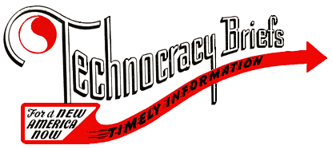

Technocracy Information Briefs
These briefs are single page introductions to various aspects of
Technocracy's body of thought.
The current series started in 1945 and has been issued at various
intervals since then.
This index lists more than are currently in print, those in print have
a `*' after the number. Take a look
at the publications page to find out how to
get hard copies.
- 17
-
The Hotel Pierre Address
- 25
-
Who Is A Technocrat?
- 28*
- Why Technocracy?
- 29*
- Energy Accounting
- 37
-
Man and the Nature of Things
- 38*
- Social Responsibility Of Science
- 44
- When Is There Over-Population?
- 50*
- An Analysis Of Technocracy
- 54*
- A Chance not a Choice
- 63*
- What This Continent Needs Is
Scientific Government
- 64*
- North America Is Too Complicated To Be
Run By Politics!
- 69
-
Road to Ruin (excerpts from the pamphlet
The Ecology of Man)
- 66
-
A Statement of the Social Objectives of Technocracy
- 73*
- Environment
- 74
- Price System Bind Continues
- 75
- Technocracy Plays North America To Win!
- 76*
- A Future For Youth
- 77*
- Population And Starvation
- 79*
- Two Worlds--One Real and One Economic
- -
- Technocracy's Approach.
This has not been distributed as a brief since the 40's.
There are also several article reprints (2 pages long):
The logo at the top of this page is the heading used for briefs 1-20.
Copyright © 1945, 1997 Technocracy, Inc.
Feedback and suggestions are welcome, send mail to
webmaster@technocracy.org
Last modified 5 Jan 98 by trent